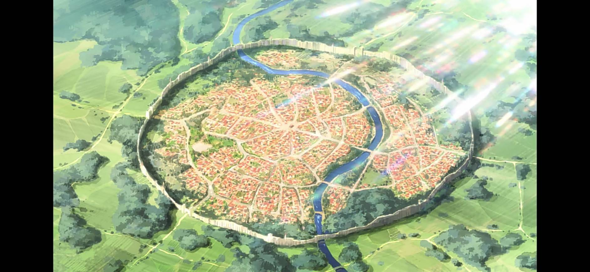
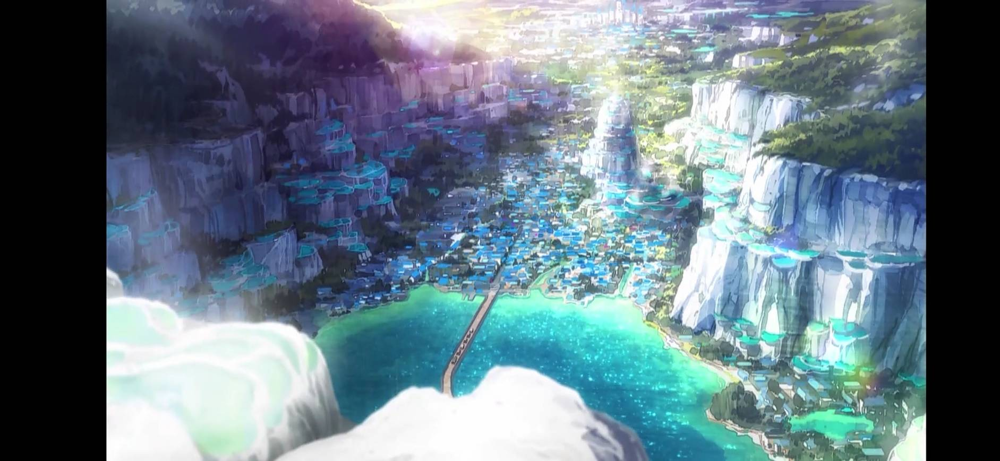
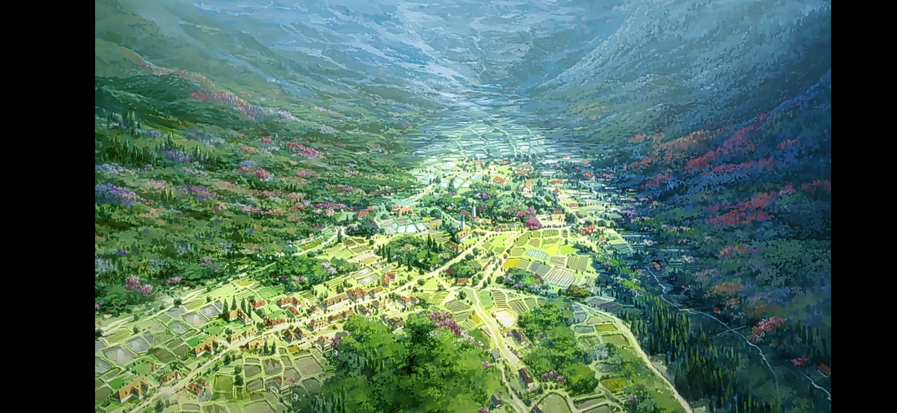
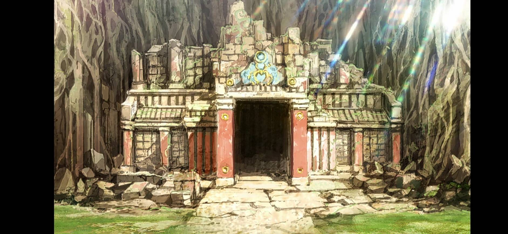

此網站由Playmaker特別製作(資料來源:維基百科)
其他 |
城市 |
冒險者相關 |
生物 |
愛麗絲公主所屬王國，也是佐藤和真等人所居住的王國。貝爾澤古王國是唯一和魔王軍領土接壤的國家，要是貝爾澤古王國敗退，防衛線被突破的話，脆弱的其他國家也會被蹂躪，因此周邊國家都會定期送來精兵增援。該國疏於經商，故經濟條件不佳，開國初期欠錢時，王族經常到其他國家幫忙打怪收錢。
位於貝爾澤古王國境內，新手冒險者一開始的城鎮，阿克婭與佐藤和真轉生到這個世界時就是到這個城鎮。
阿克塞爾的女性冒險者和公會職員找不到對象已經是阿克塞爾七大怪異現象之一。
治安非常好但奇怪的人非常多結果很多事大家經常都見怪不怪。
阿克塞爾的祭司們幾乎都是些賺錢至上的家夥，像埋葬了一堆窮人的公共墓地，別說祭禱，他們連靠近都不想靠近。維茲能夠聽見在現世徘徊的靈魂說話的聲音。這個公共墓地的靈魂很多都因爲沒有錢，就連像樣的喪禮都沒人幫忙辦，所以無法回歸天國，每天晚上都在墓園遊蕩。所以維茲會定期來到這裏，送那些想回歸天國的孩子們一程。
位於貝爾澤古王國境內，由阿克西斯教徒所經營的溫泉城鎮，從阿克塞爾搭乘馬車到阿爾坎雷堤亞需時兩天。
這裏也曾經和魔王的爪牙開戰過，但是在那次戰鬥之後，他們就不曾接近過這裏，連個魔王的魔字都沒再出現。一說。是因爲這個城鎮居住著許多祭司，對於魔王軍而言是個相當不好對付的地方；二說，是因爲這個城鎮有水之女神，阿克婭女神的眷顧；再說，因爲這個城鎮住著大量的阿克西斯教徒，所以就連魔王軍的成員也都不想和他們扯上半點關係。
由於阿克婭淨化遭魔王軍幹部污染的溫泉，使得溫泉轉變成為具有治癒與撒在不死怪物身上還能發揮聖水的功效。
自阿爾坎雷堤亞步行至紅魔之里需時二天，共乘馬車並沒有到紅魔之里。據說通往那裏的路程相當危險，紅魔之里的附近被高等怪物包圍，就連商隊也不會走。更何況，紅魔族的人們能靠瞬間移動魔法自由往來各個城鎮。所以，商隊也沒必要特地冒著危險前往那裏了。
紅魔之里有數個觀光據點，分別是：
王國首都，經常受到魔王軍攻擊。
距王都兩天徒步路程，路途中間有溫泉休息站。要塞規模不下於王都，在與邪神沃芭克激戰中外牆幾乎被爆裂魔法打垮。
在阿克賽爾附近，由大魔法師基爾所建立，是一個新手取向的地下城。
回到最上面